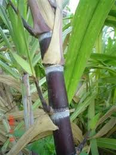

Tên khác:
Tên thường dùng: Mía, Mía đường, cây mía đường, cam giá
Tên tiếng Trung: 甘蔗, 紅甘蔗,竿蔗、糖粳
Tên thuốc: Saccharum
Tên khoa học: Saccharum offcinarum L.
Họ khoa học: Lúa Poaceae
Cây Mía
(Mô tả, hình ảnh cây mía, phân bố, thu hái, thành phần hóa học, tác dụng dược lý...)

A. Mô tả cây
Mía là một loại cỏ sống dai, thân yếu, thân rễ mang các thân cây mọc trên mặt đất cao từ 2-5m, đường kính 2-5cm, tận cùng bằng một túp lá, dài từ 30-100cm. Thân có đốt, giữa các đốt có chứa nhiều đường sacaroza.
Có nhiều thứ mía, mía de thân nhỏ, gầy và thấp, mía bầu thân to và cao, mía vỏ trắng, đỏ hay tím. Có thứ chứa nhiều đường, có thứ chứa ít đường.
B. Phân bố, thu hái và chế biến
Mía vốn có nguồn gốc Ấn Độ, hiện nay được trồng ở nhiều nước. Mía được trồng ở những nơi đất phù sa, trồng bằng ngọn hay cả cây. Sau 11-18 tháng thu hoạch, thường người ta trồng mía lấy nguyên liệu làm đường, làm thuốc, người ta dùng cả cây tươi cắt thành từng khúc ngắn 2-3cm, chẻ 2 hay 4 với tên cam giá.
Bộ phận dùng:
Bộ phận thường được sử dụng là thân cây mía
Mô tả dược liệu
Dược liệu thường được sử dụng ở 3 dạng chính, dạng nguyên thân được chặt nhỏ theo từng đốt, hoặc dạng nước là chất lỏng loãng có màu vàng đậm, cũng có thể ở dạng syrup đặc sánh có màu vàng nâu
Bào chế
Dược liệu có thể dùng dưới dạng nguyên thân, ép nước hoặc làm syrup.
Bảo quản:
Bảo quản nơi khô ráo, tránh mối mọt.
Thành phần hoá học:
Trong thân mía có Sacarroza 7-10%, protein 0.22%,chất béo 0.5%.
Các chất men: Lacaza, tyrozinaza, oxydaza ba loại men này chỉ có trong nước mía no.
Vỏ cây mía chứa chất béo gồm axit oleic, axit linolic, axit stearic và axit capronic.
Nước mía có màu vàng nâu
Tác dụng dược lý:
Mía chứa chất nhiều chất hóa học khác nhau bao gồm các hợp chất phenolic, sterol thực vật, và policosanols. Phenol giúp trong việc bảo vệ tự nhiên của thực vật chống lại sâu bệnh, trong khi sterol thực vật và policosanols là những thành phần trong các loại dầu sáp và thực vật. Đồng thời các chất hóa học trong mía còn có tính chất chống oxy hóa, làm giảm cholesterol.
Vị thuốc tỳ bà diệp
(Công dụng, liều dùng, tính vị, quy kinh...)
Tính vị:
Mía có vị ngọt mát, tính bình, không độc
Quy kinh:
Quy kinh phế, tỳ
Tác dụng:
Mía vị ngọt dưỡng:
Đại bổ tỳ âm,
Dưỡng huyết cường gân cốt,
An thần trấn kinh tức phong,
Tả phế nhiệt,
Lợi yết hầu, hạ đờm hỏa,
Chi nôn, hòa vị, tiêu phiền nhiệt
Liều dùng:
Vì mía không độc nên không có liều dùng cố định. Nhưng trong mía có hàm lượng đường lớn không nên sử dụng lượng lớn trong thời gian dài.
Ứng dụng lâm sàng của vị thuốc tỳ bà diệp
Viêm dạ dày mạn tính:
Nước mía, rượu nho mỗi thứ một ly, trộn đều, uống ngày 2 lần vào buổi sáng và tối.
Chữa nứt nẻ chân:
lấy ngọn mía và bèo cái, mỗi thứ khoảng 100g giã nát, thêm vào một bát nước tiểu (trẻ em càng tốt) nấu sôi. Ðể nước ấm rồi ngâm chỗ nứt nẻ vào khoảng 30 phút
Đại tiện táo bón:
Nước mía, mật ong mỗi thứ một ly, trộn đều. Uống ngày 2 lần vào buổi sáng và tối khi bụng trống.
Viêm da:
Vỏ mía tím nướng thành tro, nghiền vụn, trộn với dầu vừng để bôi.
Chữa ngộ độc:
thân mía 80g, thục địa, ý dĩ, cam thảo bắc mỗi thứ 30g, lá tre, kim ngân, rễ cỏ tranh, rễ ngưu tất mỗi thứ 20g. Cho vào 1 lít nước, nấu sôi rồi đun lửa nhỏ 15 – 20 phút, uống nóng hoặc để nguội tùy theo sở thích mỗi người. Cũng có thể chữa ngộ độc bằng cách lấy thân cây mía giã nát cùng với rễ cỏ tranh, ép lấy nước đun sôi trộn với nước dừa mà uống
Chữa chín mé:
lấy lõi trắng ở ngọn cây mía giã nát trộn với lòng trắng trứng gà rồi đắp và băng lại.
Tham khảo:
Đặc điểm thực vật học của cây mía
Cây mía bao gồm các bộ phận (hay các tổ chức) chính là:
Rễ, thân, lá, hoa và hạt. Mỗi bộ phận của cây mía đều có những chức năng riêng. Đối với sản xuất, chế biến, thân mía là đối tượng chủ yếu, là sản phẩm thu hoạch.
Rễ mía
Mía có hai loại rễ chính: rễ sơ sinh (rễ hom) và rễ thứ sinh (rễ vĩnh cửu). Trong loại rễ thứ sinh còn được chia làm ba nhóm theo chức năng sinh lý của nó là rễ hấp thụ, rễ chống đỡ (rễ xiên) và rễ ăn sâu (rễ hút nước). Ngoài ra, còn có một loại rễ thứ ba gọi là rễ phụ sinh đâm ra từ đai rễ ở trên thân mía.
- Rễ sơ sinh (rễ hom): Mía được trồng bằng thân (sinh sản vô tính). Khi trồng, thân mía được chặt thành từng đoạn, mỗi đoạn có từ 2 đến 4 mắt mầm (thường gọi là hom giống). Hom mía trồng tiếp xúc với đất, ở một nhiệt độ và ẩm độ nhất định, đai rễ ở các hom mía đâm ra những rễ đầu tiên nhỏ, mảnh, có màu trắng hoặc màu trắng ẩn vàng nhạt, đó là rễ sơ sinh. Đồng thời với sự ra rễ này, mầm mía cương lên, bắt đầu mọc và đâm lên khỏi mặt đất. Cây mía con thời kỳ đầu sử dụng các chất dinh dưỡng chứa trong hom giống, do đó nhiệm vụ chính của lớp rễ này là bám đất và hút nước cung cấp cho hom mía.
- Rễ thứ sinh (rễ vĩnh cửu): Tiếp sau rễ sơ sinh, lúc mầm mía đâm lên khỏi mặt đất, ở gốc của mầm mía (cây mía non) bắt đầu xuất hiện những chiếc rễ vĩnh cửu đầu tiên. Loại rễ này có màu trắng, to và đài. Chức năng chủ yêu là hút nước, dinh dưỡng, cung cấp cho cây. Cây mía con dần dần thoát ly khỏi sự phụ thuộc vào chất dinh dưỡng dự trữ trong hom mía. Hom mía khô quắt lại, rễ sơ sinh cũng đồng thời hết vai trò của nó, teo dần rồi chết. Các rễ thứ sinh dính trực tiếp với trục cây, phát triển cùng với sự phát triển của cây để hoàn thành chức năng sinh lý của nó. Những rễ này cấu tạo chủ yêu là chất xơ và được chia thành 3 lớp theo chức năng riêng của mỗi lớp. Lớp bề mặt từ 0 - 30 cm của tầng đất canh tác, phân bố chủ yếu là những rễ nhỏ, có nhiều nhánh và đầu rễ mang lông hút, làm nhiệm vụ hấp thụ các chất dinh dưỡng (lớp này gọi là rễ hấp thụ). Lớp rễ này có thể lan rộng xung quanh gốc mía từ 40 - 100 cm.
Kế đên lớp 30 - 60 cm chủ yếu là các rễ xiên. Loại rễ này to hơn các rễ lớp trên, làm nhiệm vụ chống đỡ, giữ cho cây không bị đổ ngã.
Lóp rễ thứ sinh sau cùng là những rễ ăn sâu, chức năng chính là hút nước nên gọi là lớp hút nước. Tùy thuộc vào từng loại đất khác nhau, các rễ này có khi ăn rất sâu tới 5-6 m.
Các loài rễ và chồi (mầm) mía
- Rễ phụ sinh: Loại rễ này thường đâm ra từ đai rễ ở các lóng mía dưới cùng của thân mía. Một số trường hợp khác do đặc tính của giống hoặc do điều kiện của môi trường (chủ yếu là ẩm dộ) các rễ phụ sinh phát triển nhiều từ các đai rễ trên thân mía làm ảnh hưởng xấu đến chất lượng mía nguyên liệu. Do vậy, những giống mía hay ra rễ trên thân thường không được sản xuất tiếp nhận.
Thân mía:
Nhiệm vụ của thân mía không phải chỉ để giữ bộ lá mà còn là nơi dẫn nước và dinh dưỡng từ rễ tới lá và dự trữ đường nhờ quá trình quang họp ở bộ lá. Thân mía là đối tượng thu hoạch, là nguyên liệu chính để chế biến đường.
Thân mía được hình thành bởi nhiều dóng (hay còn gọi là lóng) hợp lại, có màu sắc và hình dạng khác nhau. Có giống mía vỏ màu xanh, có giống vỏ màu vàng, màu đỏ xẫm, màu tím hoặc ẩn tím,... về hình dạng dóng, có giống dóng hình trụ, có giống dóng hình ông chỉ, hình trống, hình chóp cụt xuôi hoặc ngược (còn gọi là hình chùy xuôi hoặc ngược), có giống hình cong,… Nhiều giống mía thân thẳng nhưng cũng có giống các dóng nối nhau theo hình zig-zag,... Các dạng dóng mía Ở mỗi dóng mía quan sát chúng ta thấy có những đặc điểm sau: mầm (mắt mầm), rãnh mầm, đai sinh trưởng, đai rễ, đai phấn, sẹo lá, vết nứt,… Mỗi đặc điểm này khác nhau đôi với từng giống mía.
- Mầm mía (còn gọi là mắt mầm):
Mỗi dóng mía mang một mắt mầm. Khi gặp những điều kiện thích hợp (chủ yếu là nhiệt độ và ẩm độ), mỗi mắt mầm này sẽ phát triển thành một cây mới. Mắt mầm có hình dạng khác nhau tùy theo đặc điểm của từng giống mía như hình tam giác, bầu dục, hình trứng, hình hến, hình thoi, hình tròn, hình ngũ giác, hình chữ nhật, hình mỏ chim,... Mắt mầm được bảo vệ bằng những chiếc vảy mầm, xung quanh phía trên mất mầm có cánh mầm, ở giữa trên cùng là đỉnh mầm. Có giống mía ở đỉnh mầm có vài lông nhỏ mịn. Đặc điểm này cũng tùy thuộc vào từng giống mía.
Lá mía
Bộ lá giữ vai trò rất quan trọng đối với sự sinh trưởng và phát triển của cây mía. Lá làm nhiệm vụ hô hấp và thực hiện quá trình quang hợp, là tổ chức đồng hóa thực sự của cây trồng. Lá còn có bẹ lá và phiến lá.
- Bẹ lá: Là phần bao, bọc thân mía, bảo vệ mắt mầm. Khi còn non bẹ lá bao bọc hoàn toàn, khi già thì bao bọc một phần thân và đến lúc khô chết bong đi để lại một vết sẹo ở mấu mía. Tùy theo từng giống mía mà ở bẹ lá có nhiều, ít hoặc không có lông.
Các dạng lưỡi lá - Cổ lá: Nối giữa bẹ lá và phiến lá là cổ lá (còn gọi vết dày lá). Sát cổ lá có lưỡi lá. Hình dạng cổ lá và lưỡi lá ở mỗi giống mía khác nhau.
- Tai lá: Nơi tiếp giáp với phiến lá, mép phía trên của bẹ lá còn có tai lá. Tai lá cũng có hình dạng khác nhau đối với từng giống mía và có thể có ở cả hai phía (trên và dưới) hoặc chỉ có ở một phía nào đó. Chức năng của tai lá giúp cho phiến lá lay động được dễ dàng.
Các dạng tai lá
- Phiến lá: Mang hình lưỡi mác, màu xanh hoặc màu xanh thẫm. Phiến lá có một gân giữa màu sáng. Bề dài, bề rộng, độ dày, mỏng, cứng, mềm của phiến lá phụ thuộc vào đặc tính riêng của từng giống mía. Tất cả những đặc điểm về hình thái giới thiệu trên đây thường được sử dụng để nhận biết và phân biệt các giống mía với nhau.
Hoa mía
Hoa mía có hình chiếc quạt mở. Khi mía kết thúc thời kỳ sinh trưởng mầm hoa được hình thành ở điểm trên cùng của thân cây (điểm sinh trưởng) và phát triển thành hoa (cây mía chuyển sang giai đoạn sinh thực). Hoa mía được bao bọc bởi chiếc lá cuối cùng của bộ lá (lá cụt), khi đã được thoát ra ngoài, hoa xòe ra như một bông cờ (nên gọi là bông cờ).
Cấu tạo của hoa mía gồm trục chính và các nhánh cấp 1, cấp 2,... (còn gọi là gié và gié con) và trên những gié con là những hoa mía nhỏ. Mỗi hoa mía được bao bởi 2 mảnh vỏ, được tạo thành bởi hai lớp màng trong và màng ngoài. Tổ chức sinh sản của hoa: Hoa mía là loại hoa có tổ chức sinh sản ngầm (Hipogina) và cấu trúc đơn giản. Mỗi hoa bao gồm cả tính đực và tính cái, với ba nhị đực, một tử cung và hai nhị cái. Khí hoa mía nở, các bao phấn nhị đực tung phấn, nhờ gió mà các nhị cái dễ dàng tiếp nhận những hạt phấn đó như đặc tính chung của các hòa thảo khác.
kiêng kị
Do mía có tính hàn nên những người đau bụng hay tỳ vị hư hàn không nên dùng. Không nên ăn mía nhai cả vỏ hoặc không rửa vì ở vỏ mía bám rất nhiều trứng giun và vi khuẩn. Trong một thí nghiệm, người ta lấy 2 đoạn mía dài chừng 100 cm ở hai cây mía khác nhau đem rửa cọ và lấy cặn lắng ở nước rửa mía này soi trên kính phát hiện thấy 1.400 trứng giun, trong đó chiếm 75% số trứng giun có khả năng gây nhiễm bệnh
Tag: cay Cay mia , vi thuoc Cay mia , cong dung Cay mia , Hinh anh cay Cay mia , Tac dung Cay mia , Thuoc nam
Thaythuoccuaban.com Tổng hợp
*************************